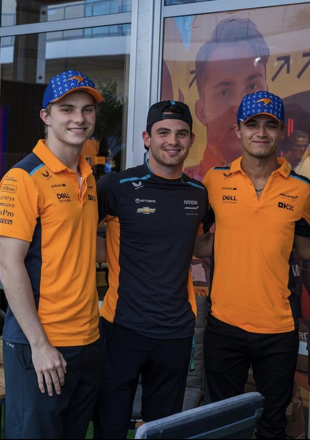
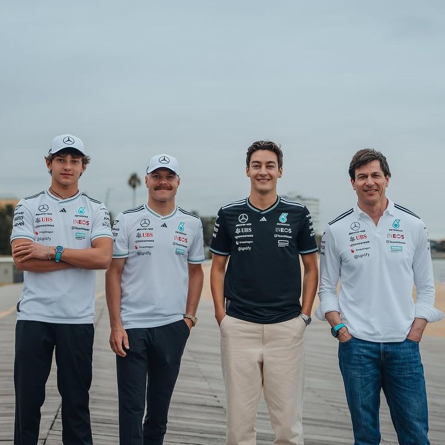
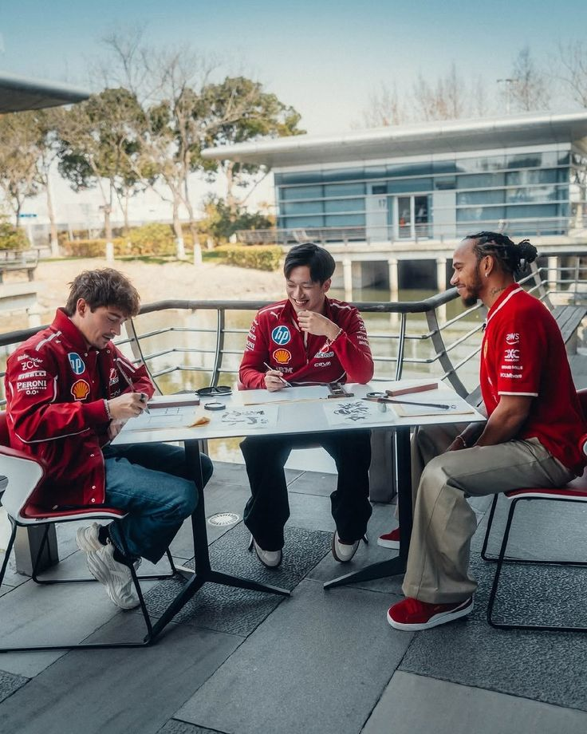
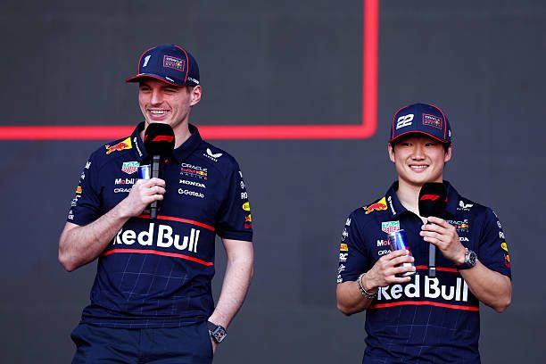
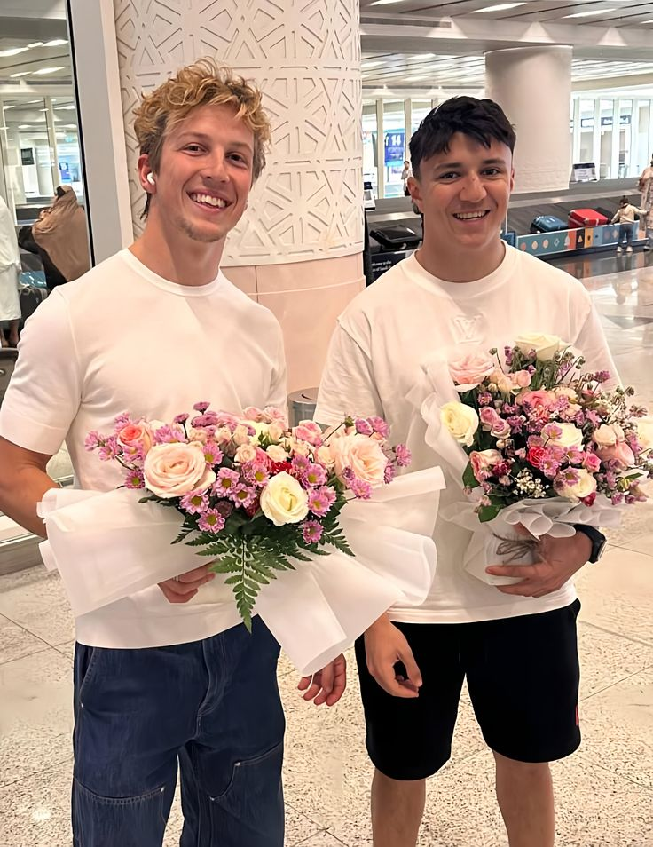
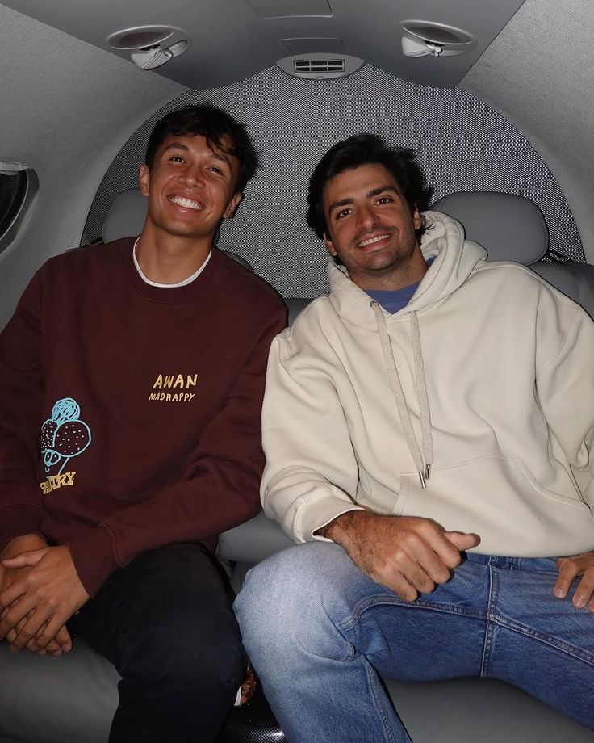
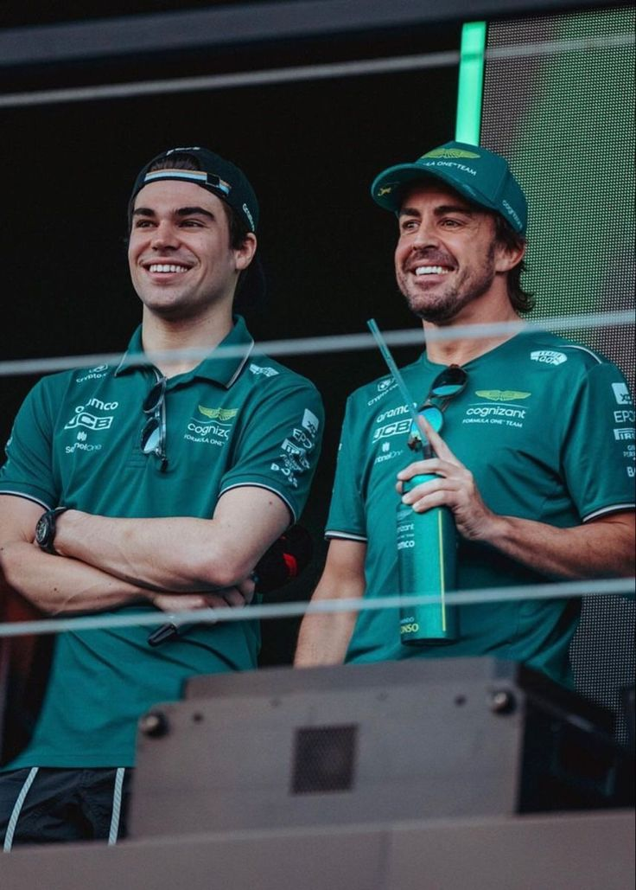
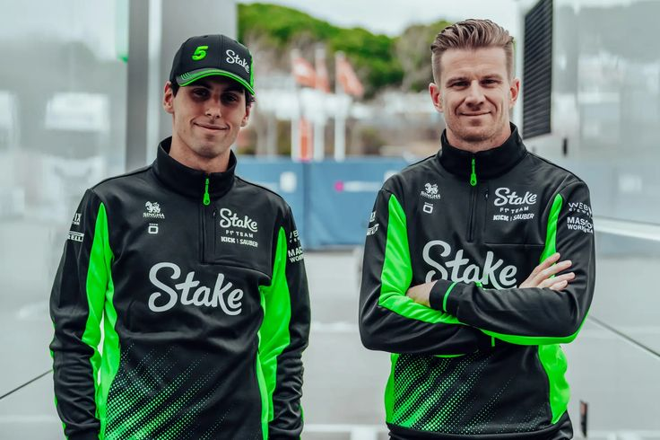
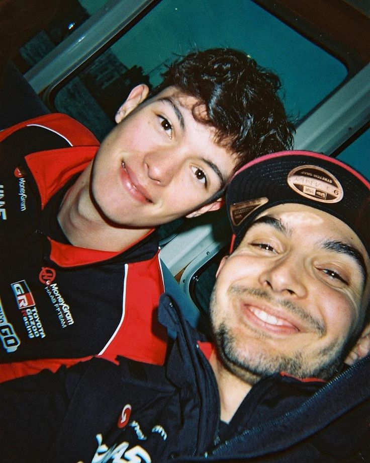
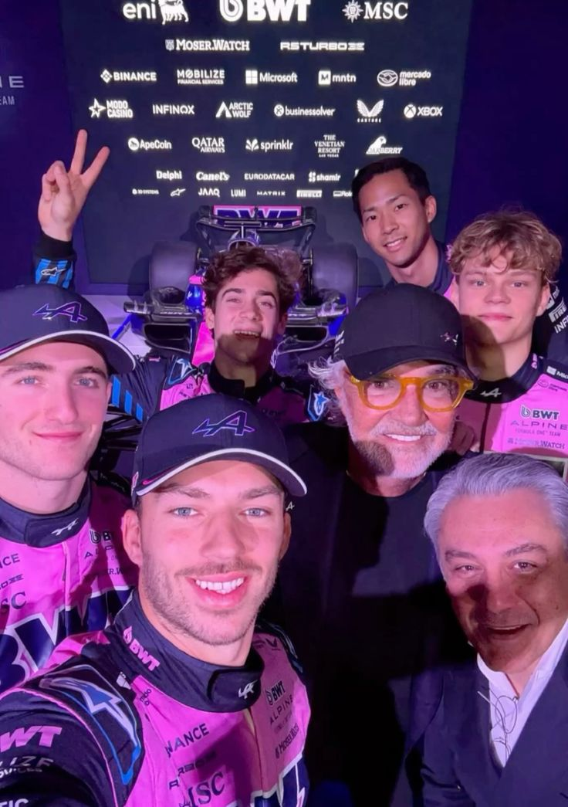

<html>
 <head>
  <title>

  </title>
 </head>
 <body <body bgcolor></body>
Ciao<3
<h1 <h1 style="text-align:center"> 
    F1 2025
     </h1>
 <br>
Drivers:  1.  <a href="file:///D:/oop/Fanniinfo/feli1/weblap/Lando%20Norris.html"> Lando Norris </a> <br>
&#160; &#160; &#160; &#160; &#160; &#160; &#160; 2.  <a href="file:///D:/oop/Fanniinfo/feli1/weblap/Oscar.html"> Oscar Piastri</a> <br>
Reserve driver:  <a href="file:///D:/oop/Fanniinfo/feli1/weblap/pato.html"> Pato O'Ward </a> <br>
 <br>


 <br>
Drivers: 1. <a href="file:///D:/oop/Fanniinfo/feli1/weblap/george.html"> George Russell</a> <br>
&#160; &#160; &#160; &#160; &#160; &#160; &#160; 2. <a href="file:///D:/oop/Fanniinfo/feli1/weblap/kimi.html"> Kimi Antonelli</a>  <br>
Reserve driver: <a href="file:///D:/oop/Fanniinfo/feli1/weblap/valtteri.html"> Valtteri Bottas</a> <br>
  <br>
 
 <br>
Drivers: 1. <a href="file:///D:/oop/Fanniinfo/feli1/weblap/Charles.html"> Charles Leclerc</a> <br>
&#160; &#160; &#160; &#160; &#160; &#160; &#160; 2. <a href="file:///D:/oop/Fanniinfo/feli1/weblap/Lewis.html"> Lewis Hamilton</a>  <br>
Reserve drivers:1.<a href="file:///D:/oop/Fanniinfo/feli1/weblap/zhou.html"> Zhou Guanyu</a> <br>
 &#160; &#160; &#160; &#160; &#160; &#160; &#160; &#160; &#160; &#160; &#160; &#160; &#160; &#160; 2. <a href="file:///D:/oop/Fanniinfo/feli1/weblap/antonio.html"> Antonio Giovinazzi</a> <br>
 <br>

 <br>
Drivers: 1. <a href="file:///D:/oop/Fanniinfo/feli1/weblap/Max.html"> Max Verstappen</a> <br>
&#160; &#160; &#160; &#160; &#160; &#160; &#160; 2. <a href="file:///D:/oop/Fanniinfo/feli1/weblap/yuki.html"> Yuki Tsunoda</a>  <br> 
Reserve driver:<a href="file:///D:/oop/Fanniinfo/feli1/weblap/arvid.html"> Arvid Lindbald</a> <br>
 <br>

 <br> <br>
Drivers: 1. <a href="file:///D:/oop/Fanniinfo/feli1/weblap/isack.html"> Isack Hadjar</a><br>
&#160; &#160; &#160; &#160; &#160; &#160; &#160; 2. <a href="file:///D:/oop/Fanniinfo/feli1/weblap/liam.html"> Liam Lawson</a>  <br>
Reserve driver:<a href="file:///D:/oop/Fanniinfo/feli1/weblap/ayumu.html"> Ayumu Iwasa </a><br>
 <br>

 <br>
Drivers: 1. <a href="file:///D:/oop/Fanniinfo/feli1/weblap/alex.html">Alex Albon</a> <br>
&#160; &#160; &#160; &#160; &#160; &#160; &#160; 2. <a href="file:///D:/oop/Fanniinfo/feli1/weblap/carlos.html"> Carlos Sainz</a>  <br>
 <br>

 <br>
Drivers: 1. <a href="file:///D:/oop/Fanniinfo/feli1/weblap/lance.html">Lance Stroll</a> <br>
&#160; &#160; &#160; &#160; &#160; &#160; &#160; 2. <a href="file:///D:/oop/Fanniinfo/feli1/weblap/fernando.html">Fernando Alonso</a>  <br>
Reserve drivers: 1. <a href="file:///D:/oop/Fanniinfo/feli1/weblap/felipe.html"> Felipe Drugovich </a> <br>
&#160; &#160; &#160; &#160; &#160; &#160; &#160;&#160; &#160; &#160; &#160; &#160; &#160; &#160; 2. <a href="file:///D:/oop/Fanniinfo/feli1/weblap/stoffel.html"> Stoffel Vandoorne</a> <br>
 <br>

 <br>
Drivers: 1. <a href="file:///D:/oop/Fanniinfo/feli1/weblap/nico.html">Nico Hülkenberg</a> <br>
&#160; &#160; &#160; &#160; &#160; &#160; &#160; 2. <a href="file:///D:/oop/Fanniinfo/feli1/weblap/gabriel.html"> Gabriel Bortoleto</a>  <br>
 <br>

 <br>
Drivers: 1. <a href="file:///D:/oop/Fanniinfo/feli1/weblap/esteban.html"> Esteban Ocon</a> <br>
&#160; &#160; &#160; &#160; &#160; &#160; &#160; 2. <a href="file:///D:/oop/Fanniinfo/feli1/weblap/ollie.html"> Oliver Bearman</a>  <br>
 <br> 

 <br>
Drivers: 1. <a href="file:///D:/oop/Fanniinfo/feli1/weblap/pierre.html"> Pierre Gasly</a> <br>
&#160; &#160; &#160; &#160; &#160; &#160; &#160; 2. <a href="file:///D:/oop/Fanniinfo/feli1/weblap/jack.html"> Jack Doohan</a>  <br>
Reserve drivers:1.<a href="file:///D:/oop/Fanniinfo/feli1/weblap/paul.html">Paul Aron</a><br>
&#160; &#160; &#160; &#160; &#160; &#160; &#160;&#160; &#160; &#160; &#160; &#160; &#160; &#160; 2. <a href="file:///D:/oop/Fanniinfo/feli1/weblap/franco.html"> Franco Colapinto</a>  <br>
&#160; &#160; &#160; &#160; &#160; &#160; &#160; &#160; &#160; &#160; &#160; &#160; &#160; &#160;3.<a href="file:///D:/oop/Fanniinfo/feli1/weblap/kush.html"> Kush Maini </a> <br>
 <br>
<a href="https://www.etsy.com/uk/search?q=f1&ref=search_bar">Things to buy</a><br>
<a href="https://f1store.formula1.com/en/">official merch</a>
</html>